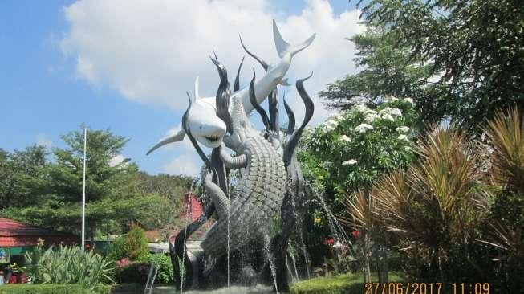

Kota Surabaya
Asal-usul Surabaya Bukti sejarah menunjukkan bahwa Surabaya sudah ada jauh sebelum zaman kolonial, seperti yang tercantum dalam prasasti Trowulan I, berangka 1358 M. Dalam prasasti tersebut terungkap bahwa Surabaya (Śūrabhaya) masih berupa desa di tepi sungai Brantas dan juga sebagai salah satu tempat penyeberangan penting sepanjang daerah aliran sungai Brantas. Surabaya juga tercantum dalam pujasastra Kakawin Nagarakretagama yang ditulis oleh Empu Prapañca yang bercerita tentang perjalanan pesiar Raja Hayam Wuruk pada tahun 1365 M dalam pupuh XVII (bait ke-5, baris terakhir). Walaupun bukti tertulis tertua mencantumkan nama Surabaya berangka tahun 1358 M (Prasasti Trowulan) dan 1365 M (Nagarakretagama), para ahli menduga bahwa wilayah Surabaya sudah ada sebelum tahun-tahun tersebut. Menurut pendapat budayawan Surabaya berkebangsaan Jerman Von Faber, wilayah Surabaya didirikan tahun 1275 M oleh Raja Kertanegara sebagai tempat permukiman baru bagi para prajuritnya yang berhasil menumpas pemberontakan Kemuruhan pada tahun 1270 M. Pendapat yang lainnya mengatakan bahwa Surabaya dahulu merupakan sebuah daerah yang bernama Ujung Galuh (Jung-Ya-Lu menurut catatan china). Versi lain menyebutkan, Surabaya berasal dari cerita
tentang perkelahian hidup-mati antara Adipati Jayengrono dan Sawunggaling. Konon, setelah mengalahkan pasukan Kekaisaran Mongol utusan Kubilai Khan atau yang dikenal dengan pasukan Tartar, Raden Wijaya mendirikan sebuah keraton di daerah Ujung Galuh dan menempatkan Adipati Jayengrono untuk memimpin daerah itu. Lama-lama karena menguasai ilmu buaya, Jayengrono semakin kuat dan mandiri sehingga mengancam kedaulatan Kerajaan Majapahit. Untuk menaklukkan Jayengrono, maka diutuslah Sawunggaling yang menguasai ilmu sura. Adu kesaktian dilakukan di pinggir Kali Mas, di wilayah Peneleh. Perkelahian itu berlangsung selama tujuh hari tujuh malam dan berakhir dengan tragis, karena keduanya meninggal setelah kehilangan tenaga. Nama Śūrabhaya sendiri dikukuhkan sebagai nama resmi pada abad ke-14 oleh penguasa Ujung Galuh, Arya Lêmbu Sora. Era prakolonial Lambang kota Surabaya pada masa Hindia Belanda (1931). Wilayah Surabaya dahulu merupakan gerbang utama untuk memasuki ibu kota Kerajaan Majapahit dari arah lautan, yakni di muara Kali Mas. Bahkan hari jadi kota Surabaya ditetapkan yaitu pada tanggal 31 Mei 1293. Hari itu sebenarnya merupakan hari kemenangan pasukan Majapahit yang dipimpin Raden Wijaya terhadap serangan pasukan Mongol. Pasukan Mongol yang datang dari laut digambarkan sebagai SURA (ikan hiu / berani) dan pasukan Raden Wijaya yang datang dari darat digambarkan sebagai BAYA (buaya / bahaya), jadi secara harfiah diartikan berani menghadapi bahaya yang datang mengancam. Maka hari kemenangan itu diperingati sebagai hari jadi Surabaya. Pada abad ke-15, Islam mulai menyebar dengan pesat di daerah Surabaya. Salah satu anggota Wali Sanga, Sunan Ampel, mendirikan masjid dan pesantren di wilayah Ampel. Tahun 1530, Surabaya menjadi bagian dari Kerajaan Demak. Menyusul runtuhnya Demak, Surabaya menjadi sasaran penaklukan Kesultanan Mataram, diserbu Senapati tahun 1598, diserang besar-besaran oleh Panembahan Seda ing Krapyak tahun 1610, dan diserang Sultan Agung tahun 1614. Pemblokan aliran Sungai Brantas oleh Sultan Agung akhirnya memaksa Surabaya menyerah. Suatu tulisan VOC tahun 1620 menggambarkan, Surabaya sebagai wilayah yang kaya dan berkuasa. Panjang lingkarannya sekitar 5 mijlen Belanda (sekitar 37 km), dikelilingi kanal dan diperkuat meriam. Tahun tersebut, untuk melawan Mataram, tentaranya sebesar 30.000 prajurit.[12] Tahun 1675, Raden Trunajaya dari Madura merebut Surabaya, namun akhirnya didepak VOC pada tahun 1677. Dalam perjanjian antara Pakubuwono II dan VOC pada tanggal 11 November 1743, Surabaya diserahkan penguasaannya kepada VOC. Gedung pusat pemerintahan Keresidenan Surabaya berada di mulut sebelah barat Jembatan Merah. Jembatan inilah yang membatasi permukiman orang Eropa (Europeesche Wijk) waktu itu, yang ada di sebelah barat jembatan dengan tempat permukiman orang Tionghoa; Melayu; Arab; dan sebagainya (Vremde Oosterlingen), yang ada di sebelah timur jembatan tersebut. Hingga tahun 1900-an, pusat kota Surabaya hanya berkisar di sekitar Jembatan Merah saja. Era kolonialp Peta Surabaya dari buku panduan perjalanan dari Inggris tahun 1897. Kawasan Jembatan Merah sekitar tahun 1920-an. Rumah warga Belanda di sepanjang sungai Surabaya. Pada masa Hindia Belanda, Surabaya berstatus sebagai ibu kota Keresidenan Surabaya, yang wilayahnya juga mencakup daerah yang kini wilayah Kabupaten Gresik; Sidoarjo; Mojokerto; dan Jombang. Pada tahun 1905, Surabaya mendapat status kotamadya (gemeente). Pada tahun 1926, Surabaya ditetapkan sebagai ibu kota provinsi Jawa Timur. Sejak saat itu Surabaya berkembang menjadi kota modern terbesar kedua di Hindia Belanda setelah Batavia. Sebelum tahun 1900, pusat kota Surabaya hanya berkisar di sekitar Jembatan Merah saja. Pada tahun 1910, fasilitas pelabuhan modern dibangun di Surabaya, yang kini dikenal dengan nama Pelabuhan Tanjung Perak. Sampai tahun 1920-an, tumbuh permukiman baru seperti daerah Darmo; Gubeng; Sawahan; dan Ketabang. Tanggal 3 Februari 1942, Jepang menjatuhkan bom di Surabaya. Pada bulan Maret 1942, Jepang berhasil merebut Surabaya. Surabaya kemudian menjadi sasaran serangan udara tentara Sekutu pada tanggal 17 Mei 1944. Era kemerdekaan Pertempuran mempertahankan Surabaya Artikel utama: Peristiwa 10 November Setelah Perang Dunia II usai, pada 25 Oktober 1945, 6.000 pasukan Inggris-India yaitu Brigade 49, Divisi 23 yang dipimpin Brigadir Jenderal Aulbertin Walter Sothern Mallaby mendarat di Surabaya dengan perintah utama melucuti tentara Jepang, tentara dan milisi Indonesia. Mereka juga bertugas mengurus bekas tawanan perang dan memulangkan tentara Jepang. Pasukan Jepang menyerahkan semua senjata mereka, tetapi milisi dan lebih dari 20.000 pasukan Indonesia menolak. Tentara Britania menembaki 'sniper' dalam pertempuran di Surabaya 26 Oktober 1945, tercapai persetujuan antara Ario Soerjo, Gubernur Jawa Timur dengan Brigjen Aubertin Mallaby bahwa pasukan Indonesia dan milisi tidak harus menyerahkan senjata mereka. Sayangnya terjadi salah pengertian antara pasukan Inggris di Surabaya dengan markas tentara Inggris di Jakarta yang dipimpin Letnan Jenderal Philip Christison. Pada tanggal 27 Oktober 1945, pukul 11.00, pesawat Dakota Angkatan Udara Inggris dari Jakarta menjatuhkan selebaran di Surabaya yang memerintahkan semua tentara Indonesia dan milisi untuk menyerahkan senjata. Para pimpinan tentara dan milisi Indonesia menjadi marah ketika membaca selebaran ini dan menganggap Brigjen Mallaby tidak menepati perjanjian yang ditanda tangani satu hari sebelumnya. Pada 28 Oktober 1945, pasukan Indonesia dan milisi menggempur pasukan Inggris di Surabaya. Untuk menghindari kekalahan di Surabaya, Brigjen Mallaby meminta agar Presiden RI Soekarno dan panglima pasukan Inggris Divisi 23, Mayor Jenderal Douglas Cyril Hawthorn untuk pergi ke Surabaya dan mengusahakan perdamaian. 29 Oktober 1945, Presiden Soekarno; Wakil Presiden Mohammad Hatta; dan Menteri Penerangan Amir Syarifuddin bersama Mayjen Hawthorn pergi ke Surabaya untuk berunding. Pada siang hari, 30 Oktober 1945, dicapai persetujuan yang ditandatangani oleh Presiden Soekarno dan Panglima Divisi 23 Mayjen Hawthorn. Isi perjanjian tersebut adalah diadakan perhentian tembak menembak dan pasukan Inggris akan ditarik mundur dari Surabaya secepatnya. Mayjen Hawthorn dan para pimpinan RI tersebut meninggalkan Surabaya dan kembali ke Jakarta. Pada sore hari, 30 Oktober 1945, Brigjen Mallaby berkeliling ke berbagai pos pasukan Inggris di Surabaya untuk memberitahukan soal persetujuan tersebut. Saat mendekati pos pasukan Inggris di gedung Internatio, dekat Jembatan Merah, mobil Brigjen Mallaby dikepung oleh milisi yang sebelumnya telah mengepung gedung Internatio. Karena mengira komandannya akan diserang oleh milisi, pasukan Inggris kompi D yang dipimpin Mayor Venu K. Gopal melepaskan tembakan ke atas untuk membubarkan para milisi. Para milisi mengira mereka diserang / ditembaki tentara Inggris dari dalam gedung Internatio dan balas menembak. Seorang perwira Inggris, Kapten R.C. Smith melemparkan granat ke arah milisi Indonesia, tetapi meleset dan jatuh tepat di mobil Brigjen Mallaby. Mobil Brigjen Mallaby yang terbakar di tempat ia terbunuh dalam pertempuran di Surabaya tanggal 30 Oktober 1945. Granat meledak dan mobil terbakar. Akibatnya Brigjen Mallaby dan sopirnya tewas. Laporan awal yang diberikan pasukan Inggris di Surabaya ke markas besar pasukan Inggris di Jakarta menyebutkan Brigjen Mallaby tewas ditembak oleh milisi Indonesia. Letjen Philip Christison marah besar mendengar kabar kematian Brigjen Mallaby tersebut dan mengerahkan 24.000 pasukan tambahan untuk menguasai Surabaya. 9 November 1945, Inggris menyebarkan ultimatum agar semua senjata tentara Indonesia dan milisi segera diserahkan ke tentara Inggris, tetapi ultimatum ini tidak diindahkan. 10 November 1945, Inggris mulai membom Surabaya dan perang sengit berlangsung terus menerus selama 10 hari. Dua pesawat Inggris ditembak jatuh pasukan RI dan salah seorang penumpang, Brigadir Jenderal Robert Guy Loder-Symonds terluka parah dan meninggal keesokan harinya. 20 November 1945, Inggris berhasil menguasai Surabaya dengan korban ribuan orang prajurit tewas. Lebih dari 20.000 tentara Indonesia, milisi dan penduduk Surabaya tewas. Seluruh kota Surabaya hancur lebur. Pertempuran ini merupakan salah satu pertempuran paling berdarah yang dialami pasukan Inggris pada dekade 1940-an. Pertempuran ini menunjukkan kesungguhan bangsa Indonesia untuk mempertahankan kemerdekaan dan mengusir penjajah. Karena sengitnya pertempuran dan besarnya korban jiwa, setelah pertempuran ini, jumlah pasukan Inggris di Indonesia mulai dikurangi secara bertahap dan digantikan oleh pasukan Belanda. Pertempuran pada tanggal 10 November 1945 tersebut hingga saat ini dikenang dan diperingati sebagai Hari Pahlawan. Era pascakemerdekaan Kota yang jalan utamanya dahulu hampir berbentuk seperti pita dari jembatan Wonokromo di sebelah Selatan menuju ke Jembatan Merah di sebelah Utara sepanjang kurang lebih 13 km tersebut, di akhir tahun 1980-an mulai berubah total. Pertambahan penduduk dan urbanisasi yang pesat, memaksa Surabaya untuk berkembang ke arah Timur dan Barat seperti yang ada sekarang. Bertambahnya kendaraan bermotor, tumbuhnya industri baru serta menjamurnya perumahan yang dikerjakan oleh perusahaan realestat yang menempati pinggiran kota mengakibatkan tidak saja terjadi kemacetan di tengah kota tetapi juga tidak jarang terjadi pula di pinggiran kota. Surabaya telah berkembang jauh dari kota yang relatif kecil dan kumuh di akhir abad ke-19, menjadi kota metropolitan di akhir abad ke-20 dan pada kurun abad ke-21 menjadi salah satu metropolitan dengan pertumbuhan tercepat di Asia Tenggara. Kota yang pada kurun abad ke-20 dan awal abad ke-21 dipandang panas dan kumuh ini juga berhasil berubah menjadi salah satu kota metropolitan yang paling tertata di Indonesia dengan kualitas udara terbersih.Geografi Peta Pembagian Administratif Surabaya. Surabaya secara geografis berada pada 07°09'00" – 07°21'00" Lintang Selatan dan 112°36'- 112°54' Bujur Timur. Luas wilayah
Surabaya meliputi daratan dengan luas 326,81 km² dan lautan seluas 190,39 km². Batas wilayah Kota Surabaya berbatasan dengan beberapa wilayah, yaitu: Utara Selat Madurap Timur Selat Madura Selatan Kabupaten Sidoarjo Barat Kabupaten Gresik Geologi Kondisi geologi Kota Surabaya terdiri dari Daratan Alluvium; Formasi Kabuh; Pucangan; Lidah; Madura; dan Sonde. Sedangkan untuk wilayah perairan, Surabaya tidak berada pada jalur sesar aktif ataupun berhadapan langsung dengan samudra, sehingga relatif aman dari bencana alam endogen. Berdasarkan kondisi geologi dan wilayah perairannya, Surabaya dikategorikan ke dalam kawasan yang relatif aman terhadap bencana gempa bumi maupun tanah amblesan sehingga pembangunan infrastruktur tidak memerlukan rekayasa geoteknik yang dapat menelan biaya besar. Topografi Kota Surabaya terletak di pesisir utara provinsi Jawa Timur.[13] Wilayahnya berbatasan dengan Selat Madura di sebelah utara dan timur, Kabupaten Sidoarjo di sebelah selatan, serta Kabupaten Gresik di sebelah barat. Sebagian besar wilayah Surabaya merupakan dataran rendah yaitu 80,72% dengan ketinggian antara -0,5 – 5m SHVP atau 3 – 8 m di atas permukaan laut, sedangkan sisanya merupakan daerah perbukitan yang terletak di wilayah Surabaya Barat (12,77%) dan Surabaya Selatan (6,52%). Di wilayah Surabaya Selatan terdapat 2 bukit landai yaitu di daerah Lidah dan Gayungan yang ketinggiannya antara 25 – 50 m di atas permukaan laut dan di wilayah Surabaya Barat memiliki kontur tanah perbukitan yang bergelombang. Struktur tanah di Surabaya terdiri dari tanah aluvial, hasil endapan sungai dan pantai, dan di bagian barat terdapat perbukitan yang mengandung kapur tinggi. Di Surabaya terdapat muara Kali Mas, yakni satu dari dua pecahan Sungai Brantas. Kali Mas adalah salah satu dari tiga sungai utama yang membelah sebagian wilayah Surabaya bersama dengan Kali Surabaya dan Kali Wonokromo. Areal sawah dan tegalan terdapat di kawasan barat dan selatan kota, sedangkan areal tambak berada di kawasan pesisir timur dan utara. Iklim Surabaya memiliki iklim tropis seperti kota besar di Indonesia pada umumnya. Berdasarkan klasifikasi iklim Koppen, Kota Surabaya termasuk dalam kategori iklim tropis basah dan kering (Aw) dengan dua musim dalam setahun yaitu musim hujan dan musim kemarau. Curah hujan di Surabaya rata-rata 165,3 mm. Curah hujan tertinggi di atas 200 mm terjadi pada kurun Januari hingga Maret dan November hingga Desember. Suhu udara rata-rata di Surabaya berkisar antara 23,6 °C hingga 33,8 °C.[14]